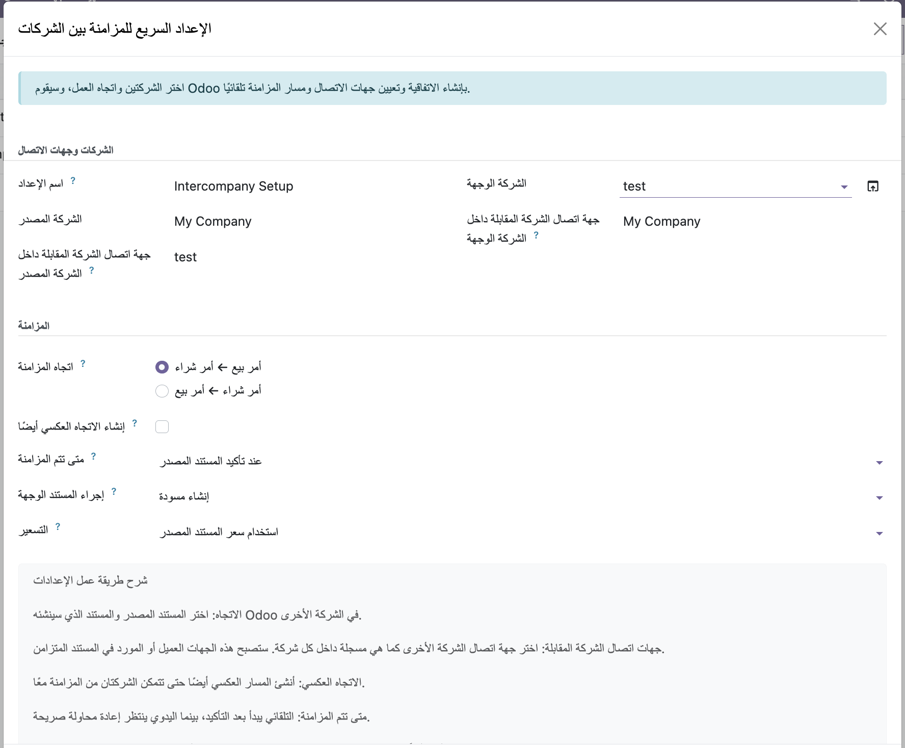

FF Intercompany Operations
By Flous Flow · flousflow.com · Support
One Odoo 20 application for controlled intercompany Sales/Purchase and Accounting synchronization between legal companies.
What is included
- Quick Setup for source/destination companies and document direction.
- Sales Order → Purchase Order and Purchase Order → Sales Order synchronization.
- Posted customer invoice/credit note → draft vendor bill/credit note synchronization.
- Draft-first policies, optional commercial-counterpart confirmation, and durable event tracking.
- Explicit counterparty mapping with a visible Intercompany Counterparty badge.
- Multi-company security, idempotency protection, Arabic translations, and operational links.
Recommended rollout
Start with Create a Draft. Review counterparties, warehouses, journals, currencies, taxes, and access groups before enabling automatic confirmation.
